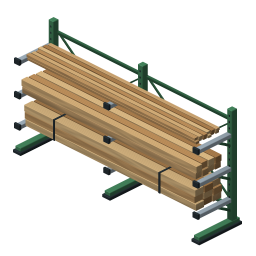
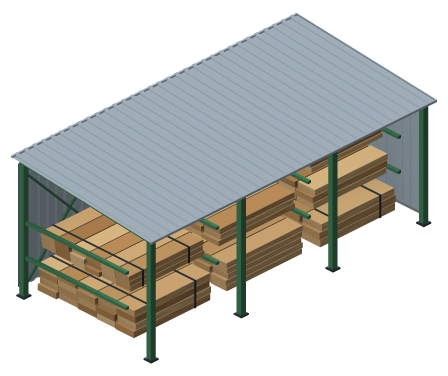

Each screen is the game's own markup in the game's own classes, drawn by the game's renderers (renderCatalogue, renderLaptop and through it renderMaterials, renderEvent and renderEventFooter, renderTopbar, renderWarningStrip, renderBoard) and put in its modal by syncModals, for companies the engine built in the 800 m² unit on Wed 3 March 2025: the day one kit, the timber kit of Turn 28 with its three cutter sets and a booth, and both covers held. Each is shown as it is today (v83) and after 2.11. The two families, Timber racks and Timber shelters, were pushed into the engine's own table of kit in the generating process only, from the figures of 2.11.1 (no sheetCapacity, a boardCapacity of 40 and 400), so every price, wait, insurance, life and floor line on their cards is the renderer's own; their pictures are the art side's, where they are tonight, in docs/pictures-t29/. Boards are kept on a timber store and never on a sheet rack: the engine keeps one counter, and the boards in it are what the timber jobs hold.
(a) 2.11.1, the catalogue's Storage tab: two families more, one class each, after the high capacity rack
Today (v83): the Storage tab
Equipment catalogue
Day one kit complete
Benches Owned 1
from £120 · 5 classes · One per worker, and the assembly of every job is done at one. The unit has a fixed number of bench slots.
Racks Owned 1
from £200 · 5 classes · Holds sheets on edge, thirty to a hundred and sixty by its class. Nothing can be unloaded without somewhere to put it.
High capacity rack
from £20,000 · 1 class · Holds 320 sheets on the floor an industrial rack takes for 160.
Tool cabinets Owned 1
from £90 · 5 classes · Holds the hand tool sets of one man to eight by its class, and the hand edgebander with them. Every worker needs a slot in one and so do you.
Lockers
from £80 · 1 class · One per worker.
After: Timber racks and Timber shelters
Equipment catalogue
Day one kit complete
Benches Owned 1
from £120 · 5 classes · One per worker, and the assembly of every job is done at one. The unit has a fixed number of bench slots.
Racks Owned 1
from £200 · 5 classes · Holds sheets on edge, thirty to a hundred and sixty by its class. Nothing can be unloaded without somewhere to put it.
High capacity rack
from £20,000 · 1 class · Holds 320 sheets on the floor an industrial rack takes for 160.
Timber racks
from £1,200 · 1 class · Holds the boards of the windows and doors, forty of them. Boards are kept on a timber store and never on a sheet rack.
Timber shelters
from £18,000 · 1 class · Holds four hundred boards under a roof, outside on the apron. It takes no floor in the hall.
Tool cabinets Owned 1
from £90 · 5 classes · Holds the hand tool sets of one man to eight by its class, and the hand edgebander with them. Every worker needs a slot in one and so do you.
Lockers
from £80 · 1 class · One per worker.
Today (v83): the high capacity rack, the nearest card
Equipment catalogue
Day one kit complete
High capacity rack
Holds 320 sheets on the floor an industrial rack takes for 160. 1 class to choose from.
High capacity rack
Life about 100,000 hours
Holds 320 sheets
£20,000
Delivered in 15 working days
Insurance £800 a year
Takes 4 m by 1 m, works in 4 m by 2 m
The industrial rack with its bays packed twice as tight, in red so nobody takes it for the other one. Three hundred and twenty sheets on the four metres of floor that used to hold a hundred and sixty.
After: the Timber rack, 40 boards, £1,200, 3 days
Equipment catalogue
Day one kit complete
Timber racks
Holds the boards of the windows and doors, forty of them. Boards are kept on a timber store and never on a sheet rack. 1 class to choose from.
Timber rack

Life about 100,000 hours
Holds 40 boards
£1,200
Delivered in 3 working days
Insurance £48 a year
Takes 4 m by 1 m, works in 4 m by 2 m
A cantilever rack in green steel, its arms on three levels and the boards laid flat on them in strapped bundles.
After: the Timber shelter, outside on the apron, 400 boards, £18,000, 15 days
Equipment catalogue
Day one kit complete
Timber shelters
Holds four hundred boards under a roof, outside on the apron. It takes no floor in the hall. 1 class to choose from.
Timber shelter

Life about 100,000 hours
Holds 400 boards
£18,000
Delivered in 15 working days
Insurance £720 a year
Takes 3 m by 6 m, works in 3 m by 6 m
A steel roof on green posts, clad at the back and at one end, with cantilever arms inside and the boards stacked under it in strapped packs.
(b) 2.11.2, the Materials page on the laptop: a small kitchen holding 10 sheets and 20 sheets free on the 50 sheet rack, a sash window whose 19 boards are in, a casement window whose 12 boards are at the gate
Today (v83): the 19 boards sit in the sheet line (Reserved 29, Total 49 of 50, Restock offers 1 sheet), and the rows count boards as sheets
Laptop
Stock
Stock sheets1 sheet at £200 = £200
MFC 18 mm, whiteMFC-18-WHT-875Free 20Reserved 29Total 49 of 50
Projects
Small kitchen £5,00010 sheets10 of 10 sheets in hand
Sash windows £14,00019 sheets19 of 19 boards of timber in handGlass not ordered
Casement windows £9,00012 sheets12 of 12 boards of timber shortTimber is ordered for the job: the racks hold sheets.Glass not ordered
Deliveries
12 sheetsat the gate, waiting to be unloaded
After, with a timber rack standing: the sheet line counts sheets only (Reserved 10, Total 30 of 50, Restock offers the rack's 20), one row more, Timber boards, held and room, and the timber rows say boards
Laptop
Stock
Stock sheets20 sheets at £190 = £3,800
MFC 18 mm, whiteMFC-18-WHT-875Free 20Reserved 10Total 30 of 50
Timber boardsOAK-27-PAR-876Held 19Room 21Total 19 of 40
Projects
Small kitchen £5,00010 sheets10 of 10 sheets in hand
Sash windows £14,00019 boards19 of 19 boards of timber in handGlass not ordered
Casement windows £9,00012 boards12 of 12 boards of timber shortTimber is ordered for the job: the racks hold sheets.Glass not ordered
Deliveries
12 boardsat the gate, waiting to be unloaded
(c) 2.11.2, the lorry's card, in the event modal's small folder: the 19 boards of the sash windows for Mrs Patel at the gate
Today (v83): with room on the sheet rack
Delivery at the gate
19 sheets have arrived. Nothing can be made until they are inside.
After: with room on the timber stores
Delivery at the gate
19 boards have arrived. Nothing can be made until they are inside.
Today (v83): with no rack in the hall
Delivery at the gate
19 sheets have arrived and there is no shelving to put them on. Buy some from the catalogue.
After: no timber store
Delivery at the gate
19 boards have arrived and there is no timber store to put them on. Buy one from the catalogue.
After: the stores too full, a bifold door job holding 24 of the rack's 40
Delivery at the gate
19 boards have arrived and the timber stores have room for 16. They wait at the gate until a job uses its boards or another store is bought.
(d) 2.11.2, the warning strip under the top bar
Today (v83): the paperwork done and the glass not ordered, glassNotOrdered
£303,390? today
Wed 3 March 2025 · 08:00Pace 1.00
Efficiency 100%: 0 min worked of 0 min, 0 min lost
Workshop0 minCalls0 minEmails0 minMeetings0 minSite measure0 minOffice0 minFixing and bags0 minNo free machines0 minNo material0 minNo air at the bench0 minHall stopped0 minNothing assigned0 minIn the office with nothing to do0 min
Glass not ordered: Sash windows for Mrs Patel
After: the glass ordered, the boards at the gate and no timber store, boardsAtTheGate
£301,430? today
Wed 3 March 2025 · 08:00Pace 1.00
Efficiency 100%: 0 min worked of 0 min, 0 min lost
Workshop0 minCalls0 minEmails0 minMeetings0 minSite measure0 minOffice0 minFixing and bags0 minNo free machines0 minNo material0 minNo air at the bench0 minHall stopped0 minNothing assigned0 minIn the office with nothing to do0 min
Boards at the gate, no timber store: Sash windows for Mrs Patel
After: the glass ordered, the boards at the gate and no room on the stores
£307,910? today
Wed 3 March 2025 · 08:00Pace 1.00
Efficiency 100%: 0 min worked of 0 min, 0 min lost
Workshop0 minCalls0 minEmails0 minMeetings0 minSite measure0 minOffice0 minFixing and bags0 minNo free machines0 minNo material0 minNo air at the bench0 minHall stopped0 minNothing assigned0 minIn the office with nothing to do0 min
Boards at the gate, no room on the stores: Sash windows for Mrs Patel
After: the glass not ordered and the boards at the gate: the strip shows one line, glassNotOrdered, which sits directly above boardsAtTheGate
£303,390? today
Wed 3 March 2025 · 08:00Pace 1.00
Efficiency 100%: 0 min worked of 0 min, 0 min lost
Workshop0 minCalls0 minEmails0 minMeetings0 minSite measure0 minOffice0 minFixing and bags0 minNo free machines0 minNo material0 minNo air at the bench0 minHall stopped0 minNothing assigned0 minIn the office with nothing to do0 min
Glass not ordered: Sash windows for Mrs Patel
(e) 2.11.3, the order board
Today (v83): a sash window, a commercial sash window of 113 boards, which can be taken, and a big job of the agency's with its crew line
Order board
Reputation 40 · 3 enquiries waiting. The board is written again at 08:00 and at 13:00.
Sash windows
Budget £14,000
lacquer · deadline 24 days · expires in 3 days
19 sheets of material · about 15.3 owner days
Needs cross cut saw, four sided planer, spindle moulder, sander, frame press, spray booth, sash window cutter set
Site measure
Sash windows, commercial
Budget £86,500
lacquer · deadline 38 days · expires in 3 days
113 sheets of material · about 94.3 owner days
Needs cross cut saw, four sided planer, spindle moulder, sander, frame press, spray booth, sash window cutter set
CommercialSite measure
Lacquered wardrobe x 64
Budget £280,000
lacquer · deadline 84 days · expires in 2 days
560 sheets of material · about 318.6 owner days
Needs table saw, edgebander, spray booth
Site measure
Wants 5 joiners free: you have 0
After, with one timber rack (the stores hold 40): the Needs line ends with timber store, the tiles say boards, and the commercial window has a red line of its own in the classes of the crew line, and no Accept
Order board
Reputation 40 · 3 enquiries waiting. The board is written again at 08:00 and at 13:00.
Sash windows
Budget £14,000
lacquer · deadline 24 days · expires in 3 days
19 boards of material · about 15.3 owner days
Needs cross cut saw, four sided planer, spindle moulder, sander, frame press, spray booth, sash window cutter set, timber store
Site measure
Sash windows, commercial
Budget £86,500
lacquer · deadline 38 days · expires in 3 days
113 boards of material · about 94.3 owner days
Needs cross cut saw, four sided planer, spindle moulder, sander, frame press, spray booth, sash window cutter set, timber store
CommercialSite measure
113 boards, and the timber stores hold 40
Lacquered wardrobe x 64
Budget £280,000
lacquer · deadline 84 days · expires in 2 days
560 sheets of material · about 318.6 owner days
Needs table saw, edgebander, spray booth
Site measure
Wants 5 joiners free: you have 0
After, with no timber store: a casement window locked, Needs timber store, and patio doors greyed, no timber store
Order board
Reputation 40 · 1 enquiry waiting, and 1 the workshop cannot take yet. The board is written again at 08:00 and at 13:00.
Casement windows
Budget £9,000
lacquer · deadline 22 days · expires in 3 days
12 boards of material · about 9.8 owner days
Needs cross cut saw, four sided planer, spindle moulder, sander, frame press, spray booth, casement window cutter set, timber store
Site measure
Needs timber store
Patio doors
Budget £10,000
lacquer · deadline 26 days · expires in 3 days
13 boards of material · about 10.9 owner days
Needs cross cut saw, four sided planer, spindle moulder, sander, frame press, spray booth, door cutter set, timber store